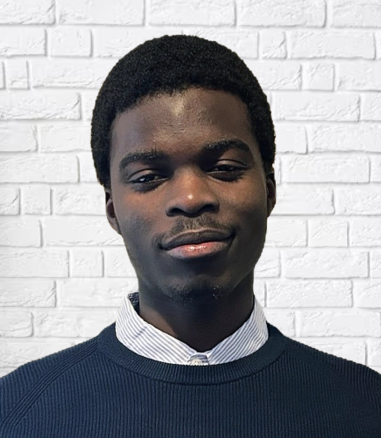

Profil & parcours
Étudiant en 4ᵉ année de cycle ingénieur à Polytech Lyon (Mathématiques Appliquées & Modélisation), je me spécialise dans la data science, le machine learning et l'analyse prédictive. Mon parcours allie rigueur mathématique — issu de CPGE MPSI — et compétences techniques solides en Python, R, SAS et SQL.
J'ai conduit des projets dans des domaines variés : analyse climatique sur données Météo-France, prédiction juridique, NLP, computer vision, géospatiale et modélisation mathématique. Je recherche une alternance d'un an à partir de septembre 2026 (rythme 2 semaines / 2 semaines).
🇫🇷 Français — C2 (maternel)
🇬🇧 Anglais — B2 (avancé)
⚽ Football
🔤 Scrabble
📊 Projets data personnels
Stages et missions
Classés par domaine
Technologies & niveaux de maîtrise
Parcours académique
Spécialisation ML, analyse de données, modélisation numérique, séries temporelles
Mathématiques, Physique, Sciences de l'Ingénieur
Ce qui me distingue
Conduite de projets de A à Z avec supervision minimale
Collaboration avec équipes multidisciplinaires
Culture de la preuve, CPGE MPSI + cycle ingénieur
Parcours international, aisance dans des contextes variés
Disponible pour une alternance dès septembre 2026
Référence académique disponible sur demande
Prof. Ciuperca Ionel Sorinel — Responsable MAM, Polytech Lyon · ionel.cuiperca@univ-lyon1.fr